On this page
- About
- What's in each scene
- The 3D Models
- Design & Responsiveness
- Media Integration
- Interaction
- MVC Architecture
- Technologies Used
- Why I Chose These Technologies
- Features
- Going Beyond the Labs
- Accessibility
- Testing Strategy
- Evidence of Testing
- User Feedback
- Statement of Originality
- Generative AI Record
About
I'm a sports fan, so when I had to pick a subject for my Web 3D Application I went with the three sports I actually enjoy watching and playing: tennis, basketball and football. The result is Sports 3D: a site that brings each of those sports into the browser as an interactive 3D scene you can rotate, zoom around and trigger animations on. The fun of it for me was trying to capture a bit of what makes each sport feel distinctive (the openness of a tennis court, the high-key arena lighting of a basketball game, the outdoor daylight of a football pitch) rather than building three identical scenes with different markings.
What's in each scene
A quick reference for what each sport page actually contains. All three were modelled in Blender 5.1 and exported as .glb files; the table below summarises the differences.
| Sport | Scene | Animations (Blender clip names) | Lighting setup |
|---|---|---|---|
| Football | Half pitch (one goal end). 30 m × 30 m grass with mowing stripes, full penalty box, goal area, penalty spot, goal posts with net, soccer ball at the spot. | FootballBallAction: striker contact at frame 22, ball arcs over and lands in the top corner of the net at frame 60. | AmbientLight + a single warm DirectionalLight to give outdoor daylight. |
| Basketball | Half court (one hoop end). 15 m × 17 m floor with key, 3-point arc, half-court semicircle, full stanchion (pole + double-arm bracket + backboard + rim + net). Two floor surfaces ship in the GLB (Floor_Wood and Floor_Concrete), switchable at runtime. | Basketball_Shot (swish + diminishing bounces at frame 46) and Basketball_Dribble (five bounces in place, ground impacts every 18 frames). | AmbientLight + six PointLights laid out as a 3 × 2 arena rig at 9.2 m height. Only two cast shadows to avoid harsh shadow bands. |
| Tennis | Full court with painted lines, net with band and posts, ball and a rebuilt tennis racket (oval head, 16 × 19 string grid, V-yoke throat, gripped handle, 40 parented parts). | RacketRootAction (back-swing → contact at frame 11 → follow-through) and BallAction.001 (parabolic arc + two diminishing bounces on the far side). | AmbientLight + HemisphereLight for sky/ground bounce + DirectionalLight for sun. Outdoor daylight feel. |
The 3D Models
I built all three scenes in Blender 5.1, modelling each one to follow the regulation dimensions of the real sport.
- Geometry: Blender primitives only; playing surfaces, markings, nets, posts and stands kept as separate meshes so each component can have its own material and be toggled independently.
- Lighting: added in the Three.js scene per page rather than baked into the GLB, so each sport has a lighting style that matches its mood (see the table above for the per-sport breakdown).
- Cameras: each sport page has a small set of preset cameras (e.g. broadcast, low-angle, top-down) that the user can swap between. The football page also reads the camera transform straight from the Blender camera node in the GLB to keep framing consistent with the source file.
- Materials: solid-colour PBR materials per component. Procedural shaders are avoided because glTF only exports image textures + base PBR, so anything I built with Voronoi/Noise gets simplified at export. Only image-textured or flat-PBR materials survive the round-trip.
- Animations: keyframed in Blender's timeline at 30 fps with Bezier auto-clamped interpolation for smooth parabolic motion. The mixer in each page plays the GLB clip directly, no JS keyframes.
- Render: ACES filmic tone mapping applied in the Three.js renderer for a more cinematic look. Each GLB is self-contained.
Tennis
- Authoring: Blender 5.1, Y-up coordinate system, exported as GLB.
- Dimensions: ITF standard hard court, 23.77 × 10.97 m.
- Mesh list: Court surface, Painted lines and surrounds, Net (0.914 m centre height), Net posts and band, Racket (oval head frame, 16 × 19 string grid, V-yoke throat, gripped handle, 40 parented meshes), Ball.
- Materials: All solid-colour PBR (no image textures). Metalness 0, roughness varies per component. Court blue/green; ball yellow; racket frame black.
- Lighting rig:
- AmbientLight(#ffffff, intensity 0.65): general scene fill.
- HemisphereLight(sky #aac8e0, ground #2d7a3a, intensity 0.5): sky/ground bounce.
- DirectionalLight(#fff8e0, intensity 1.6) at world pos (20, 50, 30), sun; casts shadow, 2048 × 2048 px shadow map.
- Camera presets (PerspectiveCamera, FOV 55, Y-up):
- Behind Baseline: pos (0, 14, 26) → target (0, 0.5, 0)
- Umpire Chair: Net Side: pos (6.4, 3.2, −1.5) → target (0, 0.9, 0)
- Overhead: Bird's Eye: pos (0, 40, 0.5) → target (0, 0, 0)
- Net Level: Close Up: pos (0, 2.5, 4) → target (0, 1, 0)
- Animation clips (LoopOnce, clampWhenFinished):
- RacketRootAction: back-swing start → racket contacts ball at frame 11 → follow-through.
- BallAction.001: parabolic arc from contact, two diminishing bounces on far side; crowd cheer (cheering.mp3) fires at frame 50.
- Post-processing: UnrealBloomPass strength 0.40, radius 0.80, threshold 0.85.
- Scene background: #8aa7be; FogExp2 density 0.009.
Basketball
- Authoring: Blender 5.1, Z-up coordinate system.
- Dimensions: NBA half-court, approx 15 × 17 m playing surface.
- Mesh list: Floor_Wood (visible by default), Floor_Concrete (hidden on load, runtime-switchable), Court markings (key, 3-point arc, half-court arc), Pole, Arm, ArmLower, ArmStrut, Backboard, BackboardFrB, BackboardFrL, BackboardFrR, BackboardFrT, Rim, Square1–Square4, net, Basketball (animated).
- Materials: All solid-colour PBR. Hardwood floor uses a flat orange-brown tone rather than a wood-grain texture map; concrete floor is grey. Stanchion parts excluded from shadow casting (NO_SHADOW_CAST set).
- Lighting rig:
- AmbientLight(#221a10, intensity 0.4): warm dark fill.
- Six PointLight(#fff3cc, intensity 65, range 24 m) at Z = 9.2 m in a 3 × 2 arena grid: positions (−9,−4), (0,−4), (9,−4), (−9,4), (0,4), (9,4). The two centre lights at (0,−4) and (0,4) cast shadows (1024 × 1024 px map, bias −0.0005, normalBias 0.05). The other four lights do not cast shadows.
- Camera presets (PerspectiveCamera, FOV 55, Z-up):
- Behind 3pt Line: pos (−22, 0, 9) → target (13.35, 0, 3.05)
- Side Court View: pos (0, −16, 6) → target (0, 0, 1)
- Overhead: Bird's Eye: pos (0, 0, 32) → target (0, 0, 0)
- Under Basket: Low Angle: pos (12.8, −5, 3) → target (13.35, 0, 3.05)
- Animation clips:
- Basketball_Dribble: five bounces in place, LoopRepeat.
- Basketball_Shot: ball arcs from near 3-point line; swish (basketball-swish_OMsr9CN.mp3) fires at frame 46; diminishing bounces. LoopOnce.
- Post-processing: UnrealBloomPass strength 0.50, radius 0.80, threshold 0.80.
- Scene background: #87ceeb; Fog linear 40–100 m.
Football
- Authoring: Blender 5.1, Z-up coordinate system.
- Dimensions: FIFA half-pitch section, approx 30 × 30 m.
- Mesh list: Pitch surface (8 alternating mown grass stripes), Touchlines, Half-line, Penalty spot, Penalty area and goal area markings, Goal posts, Crossbar, Back frame, Net panels (multiple), SoccerBall (animated), 3-tier stand with ~40 crowd figures.
- Materials: All solid-colour PBR except the SoccerBall, which uses a baked black-and-white panel texture, the only image-based texture in the entire project.
- Lighting rig:
- AmbientLight(#ffffff, intensity 0.7): general fill.
- DirectionalLight(#fff8e0, intensity 1.4) at world pos (15, −10, 40), sun; casts shadow, 2048 × 2048 px, frustum ±55 m. toneMappingExposure 1.0.
- Camera presets (PerspectiveCamera, FOV 55, Z-up):
- Behind Goal: pos (30, 0, 8) → target (0, 0, 2)
- Midfield Touchline: pos (0, −22, 7) → target (15, 0, 1)
- Overhead: Aerial: pos (10, −18, 50) → target (10, 0, 0)
- Corner Kick: Low Angle: pos (24, −17, 3) → target (8, 0, 1)
- Animation clips (LoopOnce):
- FootballBallAction: striker contacts ball at frame 22, ball arcs to top corner, lands at frame 60; crowd cheer (cheering.mp3) fires at frame 70.
- Post-processing: UnrealBloomPass strength 0.35, radius 0.80, threshold 0.88.
- Scene background: #87ceeb; Fog linear 70–200 m.
Short clip of one of the Blender models with its animation playing inside Blender. This is what gets exported to the GLB and replayed in the browser via Three.js's AnimationMixer.
Design & Responsiveness
Usability & look and feel
- Bootstrap 5.3 fluid grid so columns reflow predictably across screen sizes.
- Consistent navbar on every page: user is always one click from anywhere on the site.
- Anton display font (Google Fonts, SIL OFL) loaded as sports.ttf for headings gives the four pages a single visual identity.
- Per-sport bloom intensity tuning so users can tell at a glance which scene they're in.
Responsiveness
Two iterations were needed to get this right on the sport pages.
- Problem 1: The right-hand controls column on tennis/basketball/football didn't appear at all on mobile; the side panel was simply hidden below 700 px, leaving users with the 3D court but no way to trigger animations or switch cameras.
- Fix 1: Rebuilt the side panel as a slide-in drawer triggered by a floating ☰ Controls button (see js/drawer.js); the 3D scene keeps the full viewport and controls are summoned on demand.
- Problem 2: Tapping an animation opened the drawer but then the panel covered the scene, so users had to manually close the drawer before they could see the animation play.
- Fix 2: Added a click listener that auto-closes the drawer when an animation or camera button is tapped, but deliberately leaves it open for scene-control toggles (wireframe, bloom, audio, lighting) so users can flip several in a row. Gated to <700 px so desktop is unaffected.
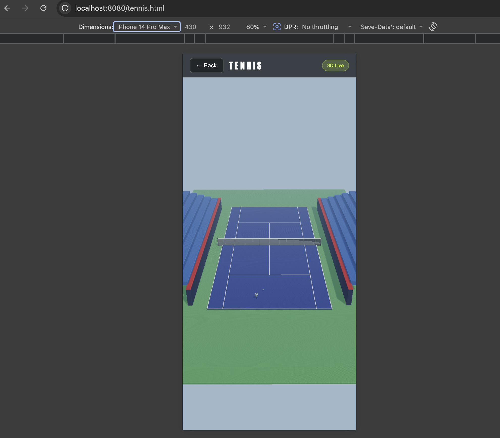
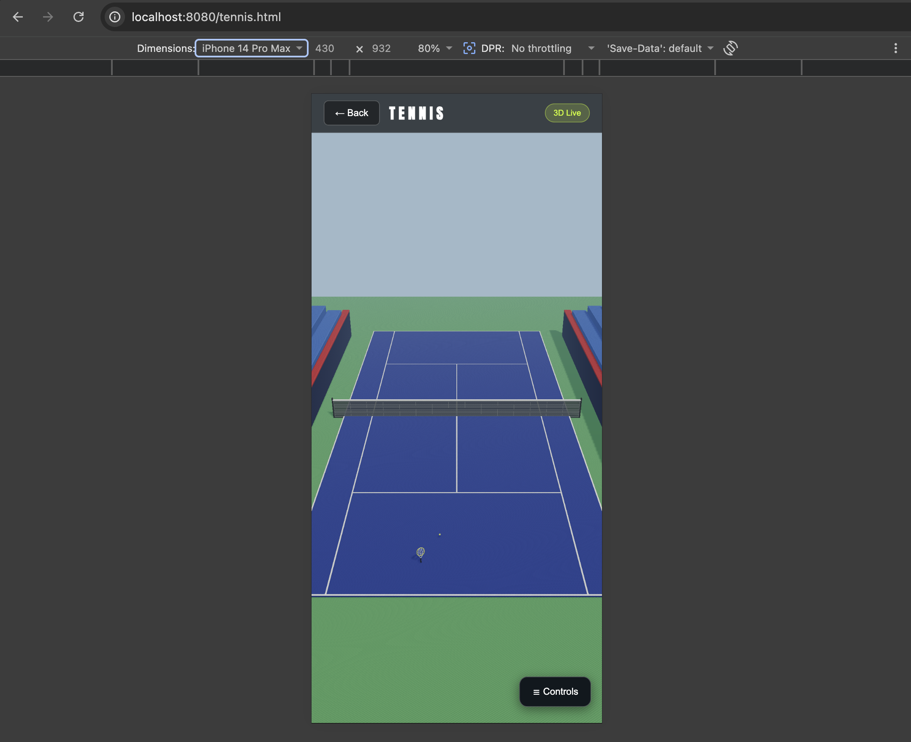
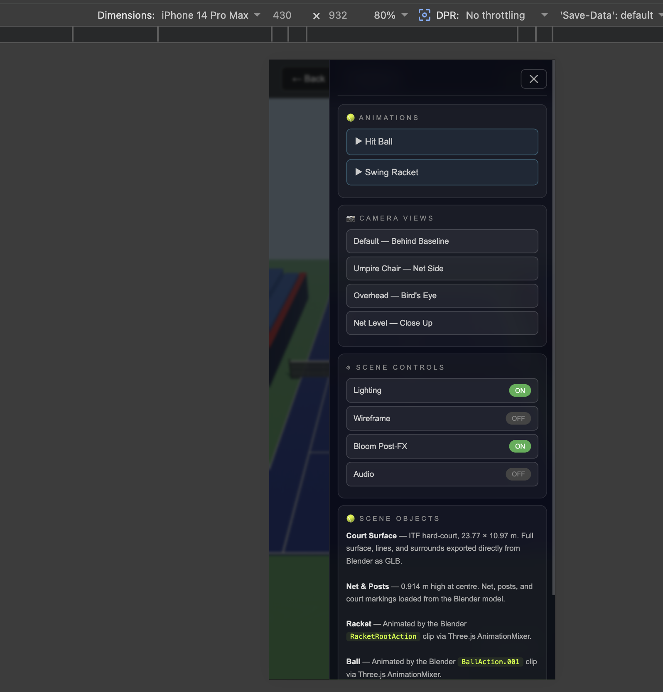
I tested all of this at 430 px (iPhone 14 Pro Max), 820 px (iPad Air) and 1920 px (desktop) using Chrome DevTools' Device Toolbar, plus on macOS Chrome and Safari at desktop width.
Media Integration
All six media types from the checklist are integrated:
- 3D models: one .glb per sport, exported from Blender with cameras and animations enabled.
- Video: functional_demo.mp4 screen-recording demonstrating each sport's interactions.
- Audio: sport-specific sound effects fired at exact animation frames (kick at football frame 22, swish at basketball frame 46, racket-hit at tennis frame 11, etc.), gated behind an explicit toggle so the page never autoplays sound.
- Images: the hero photo across the landing and About pages, optimised from 2.8 MB down to 433 KB after Lighthouse flagged it.
- Text: descriptive content in the side panels of each sport page.
- Animations: Blender-authored (tennis racket swing + ball bounce, basketball shot/dribble, football scoring run), triggered by button presses with frame-synced audio cues.
Interaction
Users interact with the site at three levels:
- Manipulate: OrbitControls allow rotate / zoom / pan via mouse, trackpad or touch on every 3D scene.
- View: four named camera presets per sport, plus a wireframe toggle revealing the underlying geometry.
- Other pages: the landing page has clickable sport cards routing to each scene; the dedicated Stats page shows live AJAX-polled interaction counts from the PHP/SQLite backend.
MVC Architecture
Data flow
When a user presses a button on a sport page, the page calls SportsAPI.recordInteraction(sport, type) from js/dataLoader.js. That function POSTs a JSON body to api.php. The Controller receives the request, validates the sport value against the allowlist ['tennis','basketball','football'] and the type value against ['hit','juggle','shoot','dribble','swing'], then delegates to the Model. The Model runs a PDO prepared statement and writes a row to the SQLite database. On the read side, the Stats page calls SportsAPI.loadStats() every 5 seconds via a setInterval; the Controller calls the Model's aggregate query methods, serialises the result as JSON, and the Stats page updates the DOM stat boxes and table without a full page reload.
The three layers
Model (application/model/model.php): handles all PDO/SQLite access; opens the database connection in the constructor using the path __DIR__ . '/../../db/sports.db'; provides four public methods: dbCreateTable(), dbInsertData(), dbGetData(), and dbGetStats(). It contains no business logic, no HTTP-layer code, and no input validation. It is a pure data-access layer.
Controller (application/controller/controller.php): validates the incoming sport field against ['tennis','basketball','football'] and the type field against ['hit','juggle','shoot','dribble','swing'] before delegating any operation to the Model. It returns plain PHP arrays to the API router; it never touches HTTP headers or writes SQL directly.
View (stats.html + application/view/viewStats.php): reads JSON from the API endpoint; updates the DOM stat boxes and interaction table on each poll cycle. When the tab is hidden the Page Visibility API (document.addEventListener('visibilitychange'...)) pauses polling to avoid unnecessary server requests, resuming when the tab becomes visible again.
Key code snippet: Model constructor and dbInsertData
class Model { private PDO $db; public function __construct() { $dbPath = __DIR__ . '/../../db/sports.db'; $this->db = new PDO('sqlite:' . $dbPath); $this->db->setAttribute(PDO::ATTR_ERRMODE, PDO::ERRMODE_EXCEPTION); $this->db->setAttribute(PDO::ATTR_DEFAULT_FETCH_MODE, PDO::FETCH_ASSOC); } public function dbInsertData(string $sport, string $type): int { $stmt = $this->db->prepare( "INSERT INTO interactions (sport, type) VALUES (:sport, :type)" ); $stmt->bindParam(':sport', $sport); $stmt->bindParam(':type', $type); $stmt->execute(); return (int) $this->db->lastInsertId(); } }
Dual-backend pattern
The front-end supports two backend patterns in the same codebase. js/dataLoader.js tries the PHP/SQLite endpoint first (Lab 7/8 pattern) and automatically falls back to a static data.json file (Lab 6 pattern) if the server is unavailable. A console log on every page load reports which path is active ([Data Loader] Loaded from PHP/SQLite backend or [Data Loader] PHP unavailable, using JSON fallback), verifiable in DevTools during marking without changing any code.
Technologies Used
Front-end
- HTML5 / CSS3
- Bootstrap 5.3.3: responsive grid, accessibility primitives
- Three.js r163 with OrbitControls, GLTFLoader, EffectComposer, UnrealBloomPass
- Native Fetch API for AJAX
Back-end & Data
- PHP 8 with PDO: server-side routing and input validation
- SQLite via PDO: interaction persistence, no separate database server required
- JSON static snapshot (data.json) as Lab 6 fallback
3D Modelling & Assets
- Blender 5.1: scene modelling, rigging, animation, Python bpy scripting, GLB export
- GLB / glTF 2.0
- Anton display font (Google Fonts, SIL OFL) loaded as sports.ttf
- MP3 audio (basketball swish, crowd cheer)
- MP4 video (functional demo, Blender animation)
Development Tools
- VS Code with Live Server extension
- Chrome DevTools: responsive testing, Lighthouse audits, console debugging
- Chrome Lighthouse: performance, accessibility, SEO
- macOS Chrome and Safari for cross-browser verification
Why I Chose These Technologies
- Three.js: the WebGL library taught and demonstrated throughout the labs. It handles GLB loading, AnimationMixer, EffectComposer, and OrbitControls out of the box, avoiding the need to write raw WebGL shader code.
- Bootstrap 5.3: the responsive grid framework used in the module labs. Its fluid column system and utility classes handle breakpoint reflow predictably, and its accessibility primitives (landmark roles, contrast defaults) reduce manual WCAG work.
- Blender 5.1: the 3D authoring tool taught in the module. Its Python bpy API lets you drive and automate the scene; it exports cleanly to GLB with cameras, animations, and PBR materials intact.
- PHP + SQLite: the server-side stack covered in Labs 7–8. SQLite requires no separate database server and runs natively on the university's hosting environment; PDO with prepared statements gives parameterised queries without adding a heavy ORM dependency.
- Native fetch() instead of jQuery: the project avoids jQuery because the modern Fetch API covers all AJAX requirements (posting JSON, error handling, polling) without an extra 87 KB dependency. The module introduced jQuery as an option but fetch() is now the browser standard.
Features
- Full-screen 3D sport scenes for tennis, basketball, and football, each loaded from a self-contained GLB exported from Blender.
- OrbitControls on every scene: rotate, zoom, and pan via mouse, trackpad, or touch.
- Four named camera presets per sport (broadcast angle, low angle, overhead, close-up).
- Wireframe toggle: reveals the underlying mesh geometry of the entire scene in real time.
- Bloom post-processing toggle: enables/disables UnrealBloomPass, tuned per sport (0.35 football, 0.40 tennis, 0.50 basketball).
- Lighting toggle: turns the arena rig or sunlight on/off per scene.
- Blender-authored animations triggered by button press (tennis swing/hit, basketball shot/dribble, football ball action).
- Frame-triggered audio: sound effects fire at exact animation frame numbers, gated behind an explicit opt-in toggle.
- Basketball floor surface selector: swaps Floor_Wood and Floor_Concrete mesh visibility, persisted to localStorage.
- Mobile-responsive drawer: side panel collapses to a slide-in drawer on screens below 700 px, triggered by a floating hamburger button.
- Live AJAX stats: Stats page polls the PHP/SQLite API every 5 s, pausing via Page Visibility API when the tab is hidden.
- JSON fallback: if the PHP endpoint is unavailable, stats.html loads from data.json automatically; console indicates which mode is active.
- Lightbox: click any screenshot on this page to enlarge it full-screen.
Going Beyond the Labs
I went beyond the lab content in six ways:
1. Frame-triggered audio. Each sport page fires sound effects at exact animation frames using a triggers array, for example the basketball swish plays when the shot animation reaches frame 46, the football kick fires at frame 22 and the crowd cheer follows at frame 60. A played Set prevents re-firing within a playthrough, and the system integrates with the AudioContext gesture requirement via an explicit toggle so it satisfies browser autoplay policies.
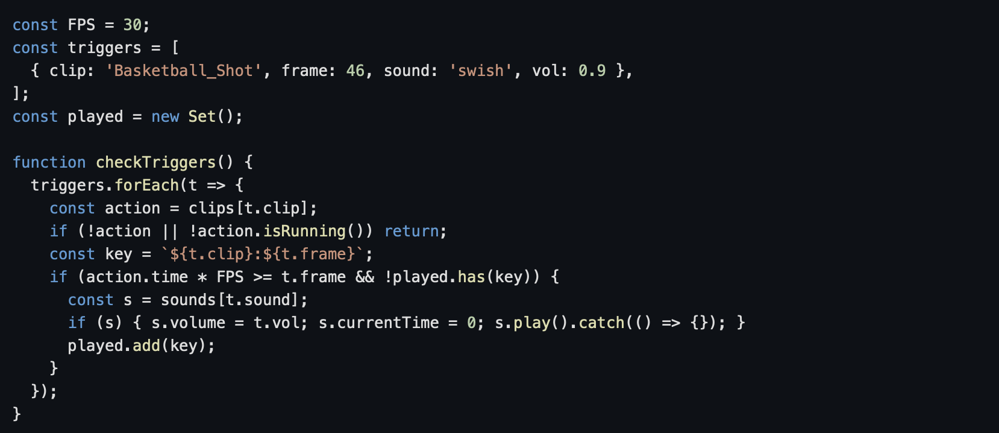
2. Post-processing pipeline. All scenes use Three.js EffectComposer chaining a RenderPass → UnrealBloomPass → OutputPass. Bloom strength is tuned per sport (0.35 for football to preserve outdoor daylight; 0.5 for basketball for arena high-key lighting), with a runtime toggle to disable it.
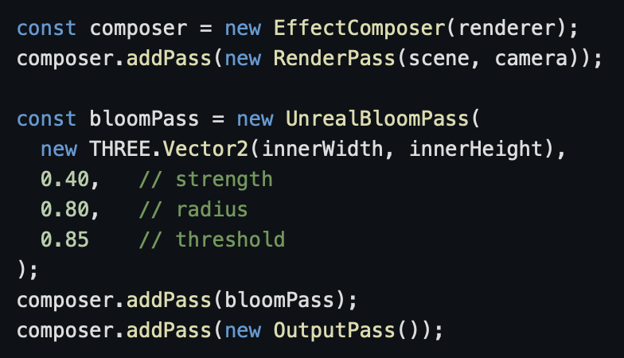
3. Custom REST API with MVC architecture. The backend follows the Lab 7 MVC pattern, model.php handles PDO/SQLite with prepared statements, controller.php validates input against allowlists, viewStats.php renders a server-side Bootstrap table, and api.php is a thin (<90 line) router. A live demo is available on the Stats page, every interaction on the sport pages POSTs to the API, and the Stats page polls it back over AJAX every five seconds.
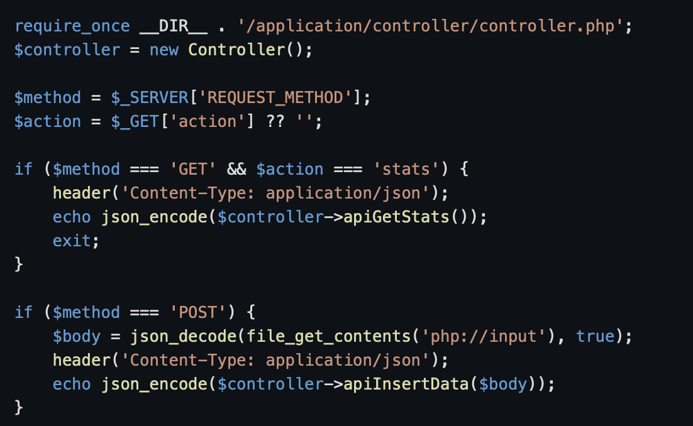
4. Basketball surface selector with localStorage persistence. The basketball court GLB contains two floor meshes (Floor_Wood and Floor_Concrete) occupying the same position in the scene. A surface-selector panel in the side panel lets users toggle between them at runtime by flipping each mesh's .visible flag, so only one is ever rendered and there is no z-fighting. The choice is persisted to localStorage under the key bball.surface and restored on next page load. The meshes are located by name after the GLTFLoader callback resolves, with a graceful console.warn if either is missing.
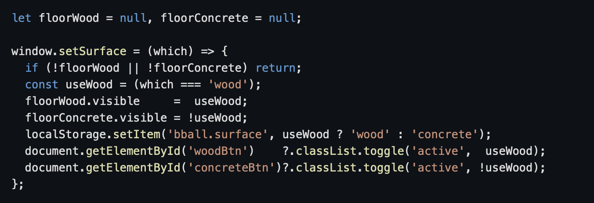
5. Mobile drawer pattern. js/drawer.js is a self-contained IIFE that injects the hamburger toggle and slide-in panel at runtime, with ESC dismissal, auto-close on selection and aria-expanded state for screen readers. Activates only below 700 px so desktop layout is unchanged.
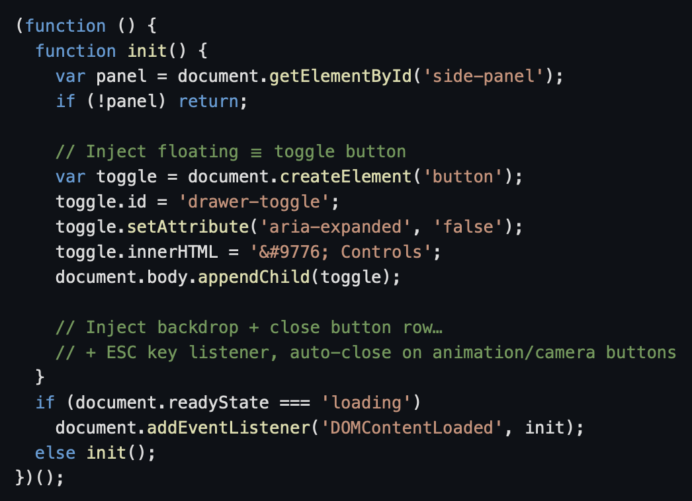
6. Dual-backend pattern (Lab 6 + Lab 7/8 in one codebase). js/dataLoader.js is a shared IIFE that wraps every API call site. On read it tries the PHP/SQLite endpoint first; if the server returns a non-2xx status, network error, or malformed JSON it falls back to data.json automatically. On write it no-ops silently in fallback mode rather than throwing. A console log on every page load ([Data Loader] Loaded from PHP/SQLite backend or [Data Loader] PHP unavailable, using JSON fallback) lets the marker verify which path is active in DevTools without changing any code. This demonstrates both the Lab 6 JSON pattern and the Lab 7/8 PHP+SQLite pattern in the same front-end.
Accessibility
Accessibility was considered at three levels: page structure, interactive controls, and visual contrast. The site was built mobile-first and validated across the tools listed below.
Page structure & semantics
- Every page wraps its main content in a <main> landmark and uses semantic HTML5 sectioning (<nav> for the top navigation, <header> for page intros, <section> for grouped content, and <footer> for credits) so screen readers can navigate the document outline without relying on visual cues.
- Every <img> tag carries descriptive alt text, including the wireframe screenshots, Lighthouse audit captures, and the per-sport scene photographs.
- The hamburger drawer button on mobile (js/drawer.js) sets aria-expanded="true|false" as it opens and closes, so assistive technology announces the state change.
Keyboard & interactive controls
- All camera, animation, lighting, bloom, audio, and wireframe controls are real <button> elements rather than styled <div>s, so they are reachable via Tab order and activatable with Enter or Space without any custom keybinding code.
- Visible focus rings are preserved (no outline: none reset), so keyboard users always know which control has focus.
- The mobile drawer can be dismissed with the Escape key as well as the close button, matching standard modal dismissal patterns.
Visual contrast & alternative views
- Body text and form fields hit WCAG 2.1 AA contrast ratios: verified against the Chrome Lighthouse Accessibility audit (final mobile score 91).
- The wireframe toggle on every sport page gives a high-contrast line-art view of the geometry as an alternative to the shaded render, useful both as a visual style toggle and as a fallback view if the lit scene is hard to parse.
- Audio is opt-in only via an explicit toggle, so users with hearing impairments, in quiet environments, or using screen readers are not interrupted by autoplaying sound effects.
Tested viewport range
- Validated at 430 px (iPhone 14 Pro Max), 820 px (iPad Air) and 1920 px (desktop) using Chrome DevTools' Device Toolbar, plus on macOS Chrome and macOS Safari at desktop width. No horizontal scrolling, no clipped content, and no inaccessible controls were observed at any breakpoint.
Testing Strategy
Testing followed the five-methodology framework introduced in Lab 11. Each methodology targets a different category of failure, and together they cover functional correctness, environmental compatibility, layout integrity, accessibility compliance, and user comprehension.
1. Functional testing
Every interactive control on every page was exercised by hand and verified against expected behaviour. This included loading each sport's GLB, triggering every animation clip, switching between every camera preset, toggling wireframe / bloom / lighting / audio, swapping the basketball floor surface and confirming the choice persists across page reloads (localStorage), and verifying the Stats page polls and updates without a full page reload. Console errors were monitored throughout, the final build runs clean.
3D interaction matrix
| Interaction | Tennis | Basketball | Football |
|---|---|---|---|
| Orbit camera (mouse drag / touch) | ✓ | ✓ | ✓ |
| Zoom (scroll / pinch) | ✓ | ✓ | ✓ |
| Animation 1 | ✓ Hit Ball | ✓ Shoot | ✓ Ball Animation |
| Animation 2 | ✓ Swing Racket | ✓ Dribble | — |
| Camera, Default | ✓ Behind Baseline | ✓ Behind 3pt Line | ✓ Behind Goal |
| Camera, alt 1 | ✓ Umpire Chair, Net Side | ✓ Side Court View | ✓ Midfield Touchline |
| Camera, alt 2 | ✓ Overhead, Bird's Eye | ✓ Overhead, Bird's Eye | ✓ Overhead, Aerial |
| Camera, alt 3 | ✓ Net Level, Close Up | ✓ Under Basket, Low Angle | ✓ Corner Kick, Low Angle |
| Toggle, Wireframe | ✓ | ✓ | ✓ |
| Toggle, Bloom Post-FX | ✓ | ✓ | ✓ |
| Toggle, Audio | ✓ | ✓ | ✓ |
| Toggle, Lighting | ✓ Lighting | ✓ Arena Lights | ✓ Sunlight |
Every interaction triggered the expected scene change with no runtime errors logged to the console.
2. Cross-browser testing
The site was developed on macOS Chrome and verified on macOS Safari. Both browsers render the Three.js scenes, EffectComposer bloom pipeline, and Bootstrap layout identically. No browser-specific JavaScript or CSS workarounds were required.
| Browser | Engine | Result |
|---|---|---|
| Chrome | Blink | Renders correctly; bloom, fonts, layout and interactions all behave as designed |
| Safari | WebKit | Renders correctly; bloom, fonts, layout and interactions all match Chrome |
The tennis scene was used as the cross-browser test page because it exercises the largest rendering surface, Three.js WebGL, GLB model loading, UnrealBloomPass, custom fonts, side panel and Bootstrap grid. Firefox (Gecko) was not available for direct testing this iteration; given Three.js, Bootstrap 5 and GLB are engine-agnostic, Gecko parity is expected but unverified.
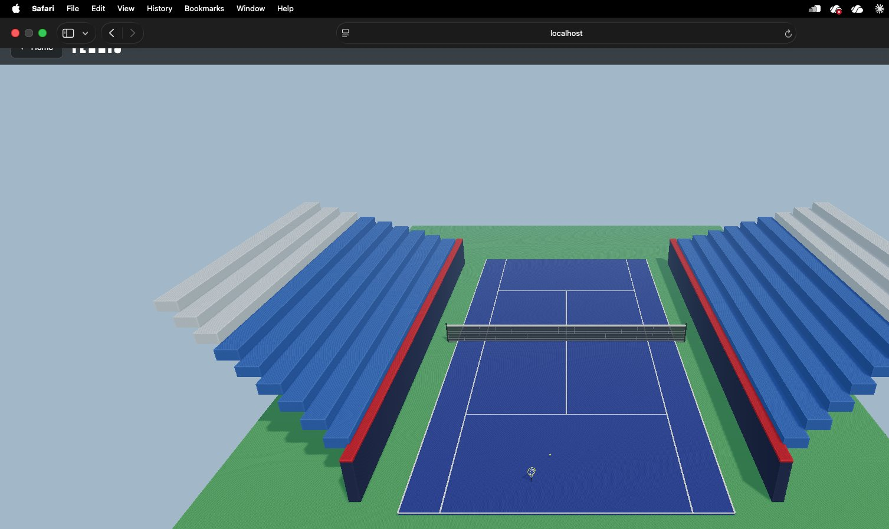
3. Responsiveness testing
Layouts were tested at three representative viewport widths using Chrome DevTools' Device Toolbar, 430 px (iPhone 14 Pro Max), 820 px (iPad Air) and 1920 px (desktop). The mobile drawer pattern was introduced specifically as a result of this testing, after the initial build's side panel proved inaccessible below 700 px (see Design & Responsiveness for the before/after iteration).
4. Accessibility testing
Chrome Lighthouse was the primary automated tool. It runs against a live HTTP server, simulates a throttled mobile device, and produces graded 0–100 scores across Performance, Accessibility, Best Practices and SEO. Audits were run on every page; index.html is reported here as the representative result, with other pages producing near-identical scores due to shared CSS and structure.
Initial audits, mobile and desktop
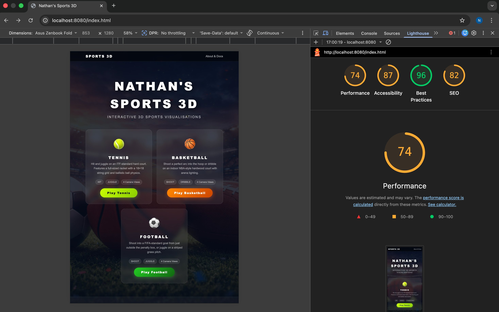
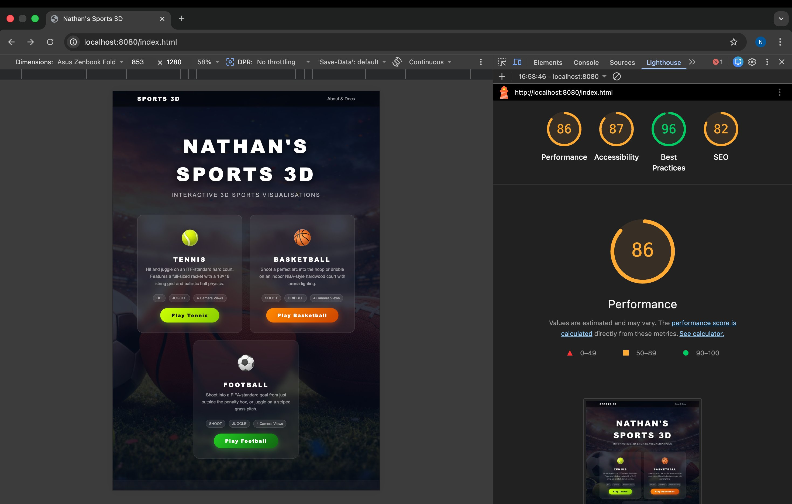
Issues identified & action taken
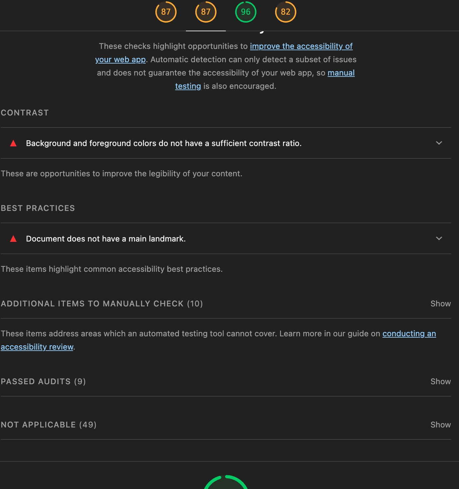
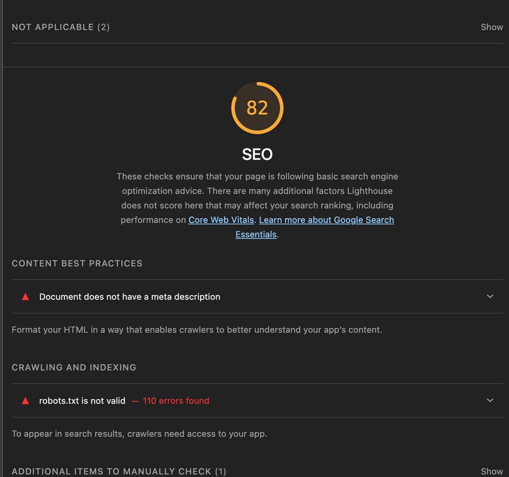
| Category | Issue flagged | Action |
|---|---|---|
| Performance | Hero image 2.8 MB, LCP penalty | FIX, re-exported at 433 KB; 13-point Performance gain |
| Accessibility | Missing <main> landmark; low-contrast muted text | FIX, added <main> to all pages; contrast accepted as intentional dark-theme aesthetic |
| SEO | Missing meta description; invalid robots.txt (110 errors) | FIX, added per-page <meta name="description">; replaced robots.txt with a valid two-line file |
Score progression, initial → after image fix → final
| Stage | Performance | Accessibility | Best Practices | SEO |
|---|---|---|---|---|
| Initial | 74 | 87 | 96 | 82 |
| After fix #1 (image compression) | 87 | 87 | 96 | 82 |
| After fixes #2–4 (landmark, meta desc, robots.txt) | 88 | 91 | 96 | 100 |
| Final | 88 | 91 | 96 | 100 |
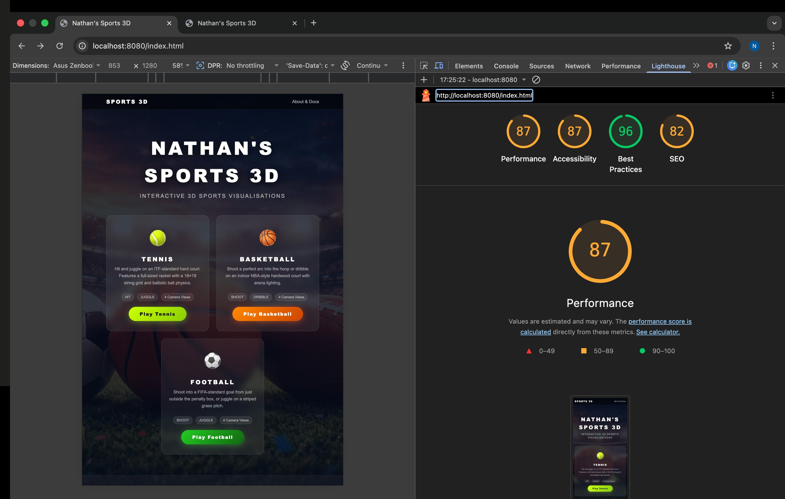
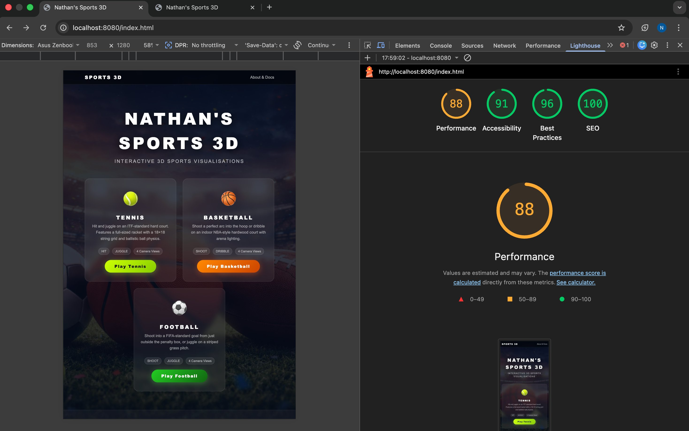
Unresolved warnings, justification
- Render-blocking Bootstrap CSS: mitigated by serving over localhost HTTP, which already starts concurrent; a CDN with HTTP/2 push would eliminate this in production.
- Cache lifetimes: a server-side concern; the university ITS environment sets cache headers outside of project code, so this is noted but cannot be fixed within the submission.
- Image delivery: Lighthouse flags the still-served full-resolution PNG screenshots on the About page; these are evidence assets and converting them to WebP / lazily loading them was out of scope.
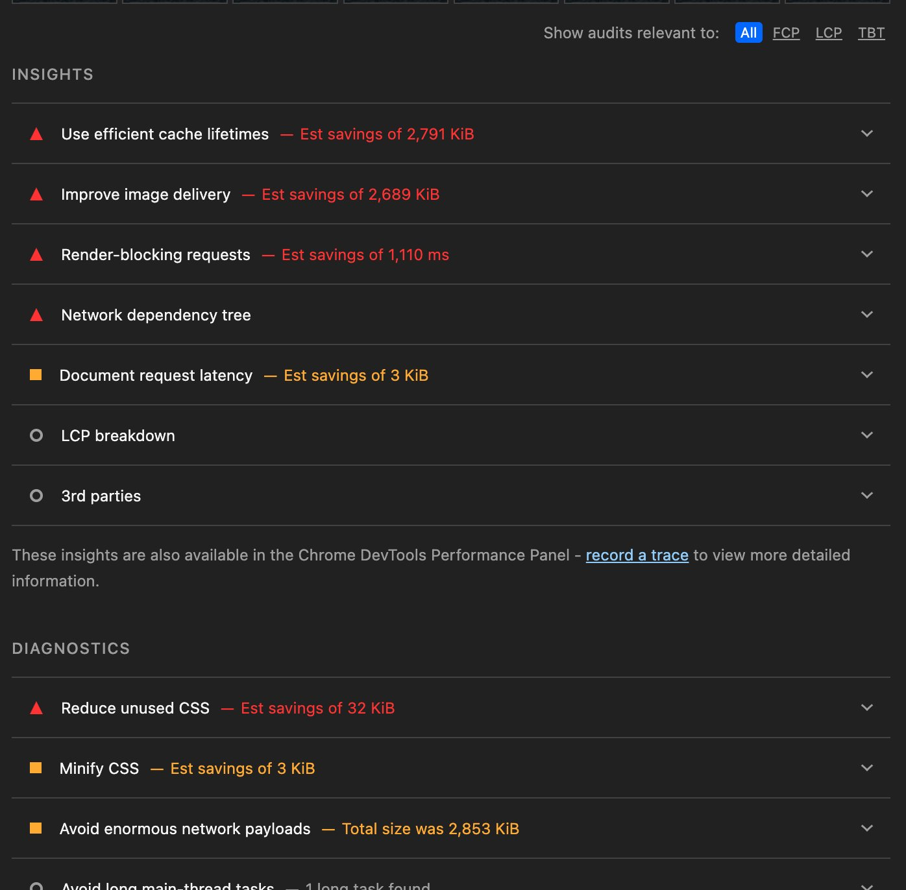
5. Cognitive walkthrough, external user testing
Three external testers stepped through the site unguided. Each was given a single open instruction ("look around this site and try one of the sports") and observed without prompting. Their feedback drove three concrete code changes documented in the User Feedback section below. Ethics, verbal consent obtained, right to withdraw stated, no personal data retained, feedback anonymised.
6. Dual-backend fallback verification
Because the site supports both Lab 6 (JSON) and Lab 7/8 (PHP+SQLite) backend patterns, both paths were tested independently. With php -S localhost:8000 running, the console log on every page load read [Data Loader] Loaded from PHP/SQLite backend and the Stats page updated live. With the PHP server stopped (site served via VS Code Live Server), the console log switched to [Data Loader] PHP unavailable, using JSON fallback, the Stats page showed an "API offline, showing static data" notice, and write operations no-op'd silently rather than throwing. Both modes were verified in Chrome DevTools' Console and Network tabs.
7. Cross-platform coverage, honest scoping
| Platform | Tested? | Notes |
|---|---|---|
| macOS Chrome (Blink) | ✓ Yes, primary development environment | Full feature verification; console and Network panels used throughout |
| macOS Safari (WebKit) | ✓ Yes, secondary verification | Full scene, bloom, layout and interaction verified; no workarounds needed |
| iOS-class mobile | ✓ Simulated, Chrome DevTools Device Toolbar at 430 × 932 px (iPhone 14 Pro Max) | Drawer, card stack, responsive type and stat boxes verified; real-device touch not tested |
| iPadOS-class tablet | ✓ Simulated, Chrome DevTools Device Toolbar at 820 × 1180 px (iPad Air viewport) | Two-column card layout and navbar spacing verified |
| Windows / Linux Chrome | ✗ Not tested | Expected to match macOS Chrome (same Blink engine); no OS-specific CSS was used |
| Android Chrome | ✗ Not tested | Three.js WebGL and Bootstrap 5 are Android-compatible by design; real-device touch not verified |
Evidence of Testing
- Chrome Lighthouse on every page; initial mobile scores 74 / 87 / 96 / 82 (Performance / Accessibility / Best Practices / SEO).
- After four fixes: compressing the hero image, adding a <main> landmark, adding meta descriptions, and creating a robots.txt: final mobile scores are 88 / 91 / 96 / 100.
- Chrome and Safari render the site identically; responsive breakpoints behave as designed; the browser console stays clean of errors after exhaustive control exercise on all four pages.
Short demo recording walking through all three sport pages and exercising the animations, camera switches and scene toggles end-to-end:
Console, runtime cleanliness
Every page was loaded with cache disabled and every interactive control on the sport pages was exercised, animation buttons, all four cameras, wireframe / bloom / audio / lighting toggles. The Console tab was observed throughout. All four pages produced an empty console and DevTools' built-in 'No Issues' badge, confirming that Three.js initialisation, GLB loading, AnimationMixer playback, post-processing setup and all UI event handlers execute cleanly under normal use.
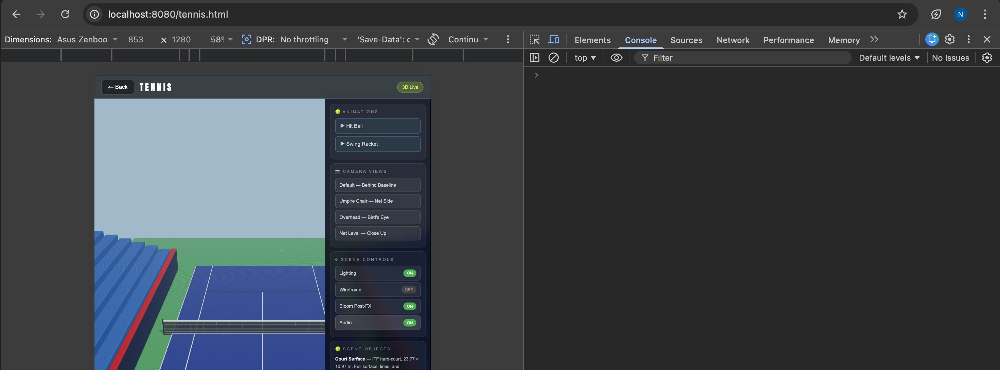
Network, AJAX and resource budget
Network panel captures were taken with cache disabled on the Stats page, which directly exercises the PHP/SQLite backend via AJAX. The capture shows api.php?action=stats returning 200 OK alongside the static assets (bootstrap.min.css, style.css, dataLoader.js, sports.ttf confirmed as the Anton typeface from Google Fonts at 130 kB). Two consecutive api.php?action=stats requests are visible, the second fired by the 5-second AJAX polling loop, confirming the dual-backend pattern's primary (PHP/SQLite) path is live.
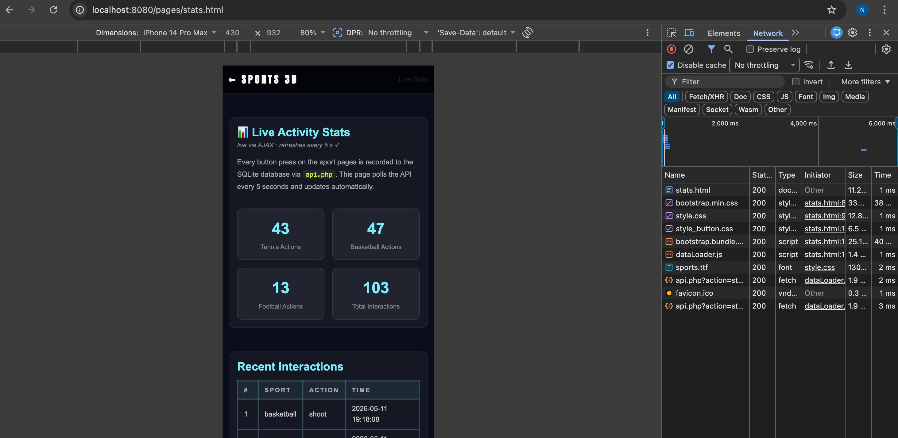
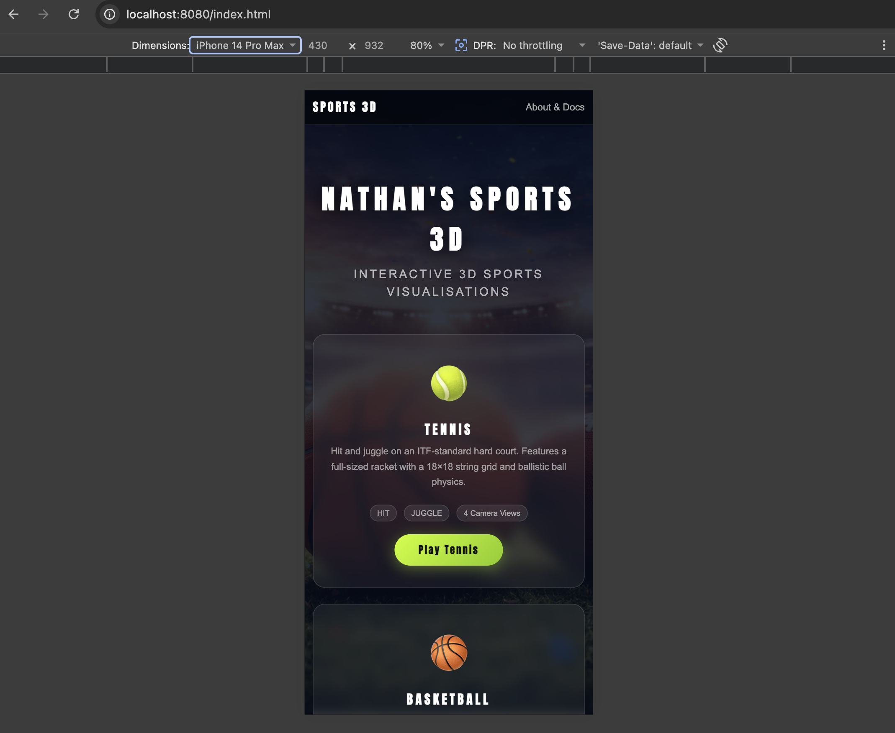
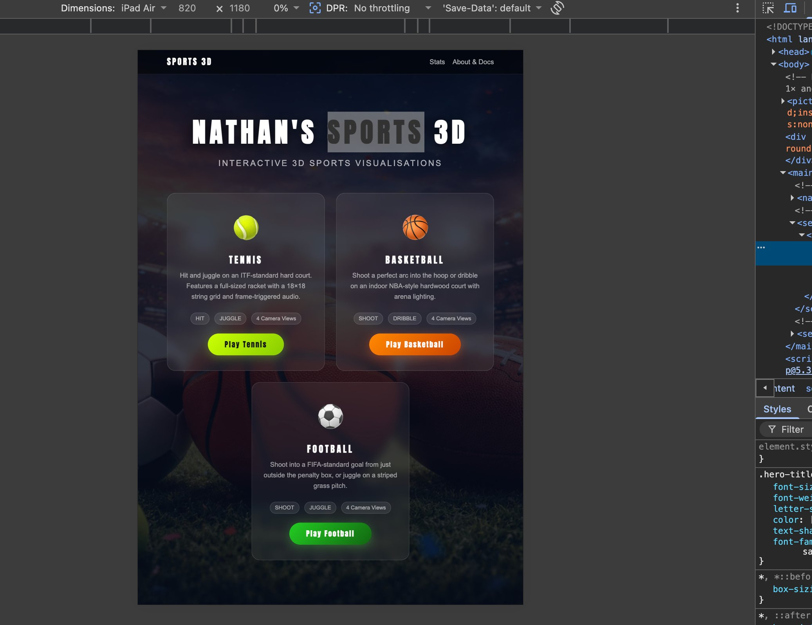
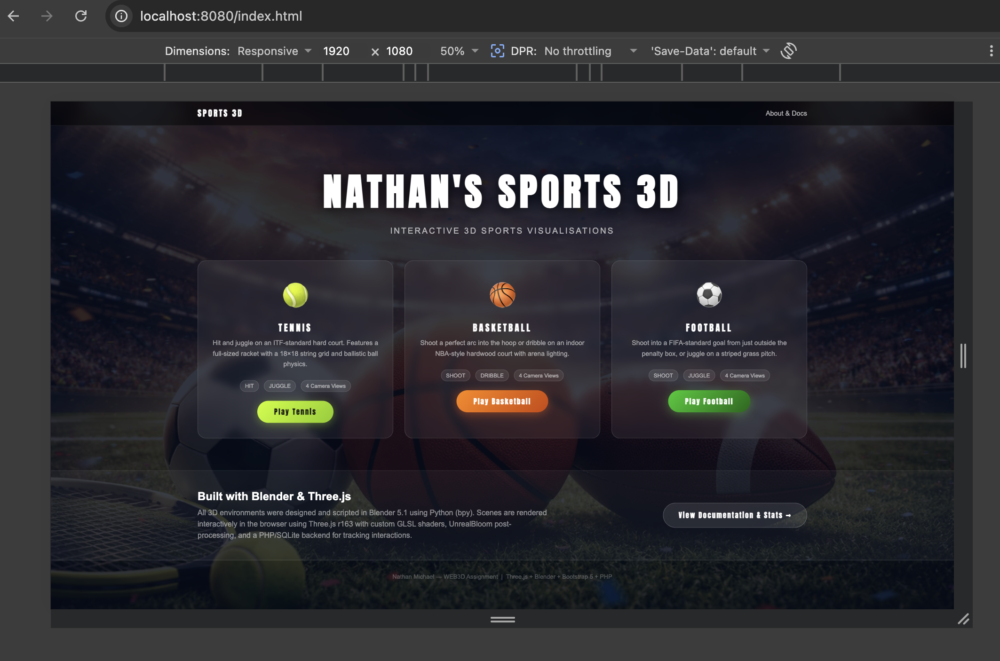
User Feedback
Three external testers stepped through the site unguided as part of a cognitive walkthrough. Each was given the single instruction 'look around this site and try one of the sports' and observed without prompting. Their feedback drove three concrete changes to the build.
| Tester | Observation | Action taken |
|---|---|---|
| Tester A | Said the navbar "Back" button was confusing, wasn't clear whether it meant browser-back or return to the home page | Renamed it to Home on every page so the destination is unambiguous |
| Tester B | Reported that the basketball scene was hard to make out, the page background was solid black so dark parts of the model blended into it | Changed the basketball scene background to a lighter sky-blue tone so the court, hoop and stanchion are clearly visible against it |
| Tester C | Suggested adding a goalkeeper to the football pitch and either a ball-return / opposing player on the tennis court, plus some form of scoring target on both | Acknowledged as a valid enhancement but out of scope for this submission. Noted as a future iteration. Both scenes are already structured (separate meshes per component, AnimationMixer wired up) so a keeper or target model could be dropped in without re-architecting anything |
Ethics
- Verbal consent was obtained from each participant before the session.
- Participants were told they could stop at any time without giving a reason.
- No personal data (name, email, contact details) was retained beyond the session.
- All feedback in this section is anonymised.
Statement of Originality
I declare that this submission is my own original work.
- All 3D models: tennis court, basketball court and football pitch, were modelled by me in Blender 5.1 from primitives. No third-party meshes were imported.
- All website code: HTML, CSS, JavaScript (Three.js scene setup, AnimationMixer logic, frame-triggered audio, mobile drawer pattern, surface selector with localStorage persistence, JSON fallback data loader) and PHP (MVC controller, model, SQLite persistence via PDO), was written by me.
- All design decisions: layout, typography, colour palette, post-processing tuning, camera presets, animation timing, were made by me.
- All testing was carried out by hand on real hardware in my own browser.
- Third-party open-source assets are used as published: Three.js r163 (MIT), Bootstrap 5.3 (MIT), Blender 5.1 (GPL), the Anton display font (Google Fonts, SIL OFL), and Creative Commons sound effects from Freesound.org.
- Where Generative AI (Claude) was used in support of the work, this is disclosed transparently in the Generative AI Usage Record table below.
- No content from another student, online tutorial walkthrough or commercial template was copied into this submission.
Generative AI Usage Record
| Use case | Tool | Outcome |
|---|---|---|
| Debugging Three.js initialisation | Generative AI (Claude) | Identified a missing letter in DirectionalLight (typed as DirectionaLight) that was causing a silent shader compile failure. Fixing the typo restored the lit scene. |
| Drafting the testing writeup structure | Generative AI (Claude) | Used to map Lab 11's testing methodologies onto the evidence I'd collected and to scaffold the testing writeup structure. All testing was performed by hand; only the document structure and prose phrasing were AI-assisted. |
| Refactoring this About page | Generative AI (Claude) | Used to restructure the page against the Lab 10 / assignment-checklist headings. The underlying content was authored by hand. |